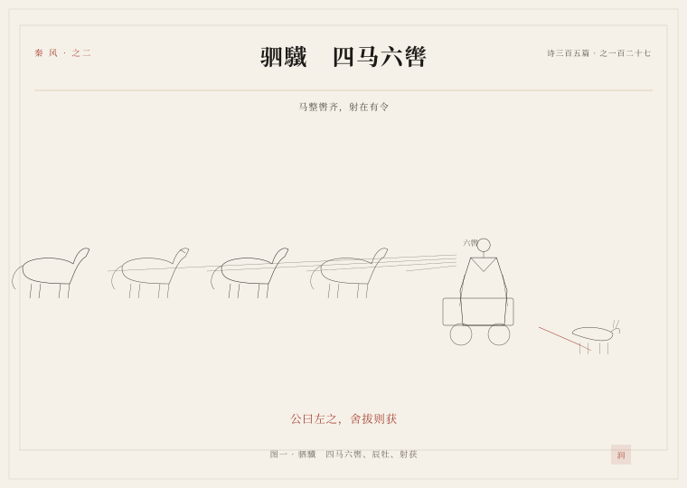
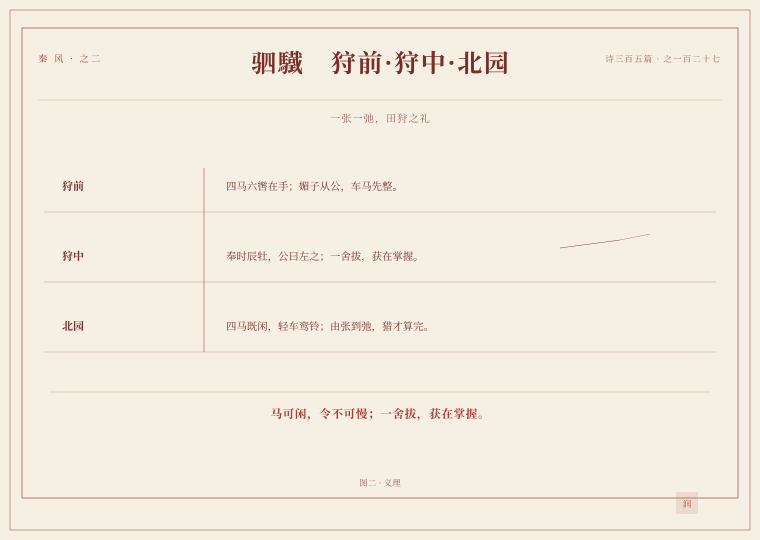

第一百二十七篇 驷驖
秦风 · 之二 SJ127
朗读 · 普通话
依经文原文朗读，章次不读出；配古琴底乐，不改速、不加拖腔。全库同一音色（豆包 TTS），非播音员录制。
一 解题
诗三判：
- 谁在说：从狩之人，美秦襄公。先写四马六辔，次写射猎之令，末写罢狩游园。
- 说什么事：三章由「狩前」到「狩中」到「狩后」。前二章写武，末一章写闲；一紧一松，正是田狩的全幅。
- 为何编在此：承《车邻》。车邻写乘车之乐，此篇写田狩之盛；秦以车马立国，始大之后即始命，狩猎是国之礼。
《毛序》：“《驷驖》，美襄公也。始命，有田狩之事，园囿之乐焉。”
朱子《诗集传》：“赋也。驖，骊也。阜，大也。襄公修其车马，乘四骊以出田，其马硕大而驯服，御者以手执其辔而已，无所用巧也。奉时辰牡，辰，时也；礼冬献狼，夏献麋，春秋献鹿豕群兽，故虞人翼兽以待公。拔，矢括也。輶车，轻车也，所以驱兽。置鸾于镳，异于乘车。猃、歇骄，田犬也，长喙曰猃，短喙曰歇骄。”
本库的看法：《驷驖》是一首把「武」写成「礼」的诗。
四马、六辔、辰牡、射获，都是武；「公曰左之」一令，「四马既闲」一收，武就有了节。无令则乱，无闲则疲。
断语：马可闲，令不可慢；一舍拔，获在掌握。
先辨五事：「驷驖」是四匹黑马，不是四匹铁马；「媚子」是亲爱之人，不是媚妾；「辰牡」是时牡，不是辰星；「舍拔」是放箭，不是舍去箭；「猃歇骄」是田犬名，不是两句叹词。
二 经文
第一章
驷驖孔阜，六辔在手。
公之媚子，从公于狩。
第二章
奉时辰牡，辰牡孔硕。
公曰左之，舍拔则获。
第三章
游于北园，四马既闲。
輶车鸾镳，载猃歇骄。
分章：三章，章四句。
三 韵读
- 一章：阜、手、狩，幽部。一韵到底，车马之整。
- 二章：牡、硕、获，铎部。入声收，射获之声短而脆。
- 三章：闲，元部；镳、骄，宵部。元宵旁通合韵；罢狩之缓，转平声。
读法：三章由狩前、狩中到狩后，韵由幽而铎而宵元；先紧后缓，一舍拔是能，四马闲是节。
四 字义与名物
- 驷驖：四匹深黑色马。毛传「驖，骊也」；朱传「驖，骊也」，从之。孔阜：甚肥大。六辔：四马六辔。
- 媚子：毛传「宜爱子也」，朱传「能以道媚于国者」；本库从亲爱近臣之义，不指嬖妾。
- 狩：冬猎。奉：虞人奉取。时辰牡：毛传「辰，时也」；按时选取牡兽。
- 左之：公命御者向左以射其左。舍拔：放箭；拔，矢括（箭末）。获：获兽。
- 北园：园囿。闲：娴习、安闲。輶车：轻车，驱逆之车。鸾镳：置鸾铃于马镳。猃、歇骄：毛传「田犬也」；长喙曰猃，短喙曰歇骄。
五 今译
四匹黑马甚肥，六条缰绳在手。公所亲爱的人，跟着公去冬猎。
奉上应时的牡兽，牡兽甚肥大。公说向左，放箭就获。
游于北园，四马已经安闲。轻车鸾铃，载着猃与歇骄两只田犬。
六 章旨
- 一章：写狩前。四马六辔，是整；媚子从公，是亲。车马整，人心齐，猎始可发。
- 二章：写狩中。奉辰牡，是礼；公曰左，是令；舍拔则获，是能。礼、令、能三层，一层不乱。
- 三章：写狩后。游北园，是转；四马既闲，是收；轻车田犬，是余。由张到弛，猎才算完。
- 总收：武不在获多，在令与闲；一舍拔是能，四马闲是节。
七 诗教
- 兴：无兴，直赋田狩；赋中有礼，礼在奉时与公令。
- 观：观秦之武，不独在射，先在六辔在手；缰绳一乱，射获就成偶然。
- 群：公与媚子同狩，人与犬同车；上下同役，田狩才不是独乐。
- 怨：无怨，有美；美在始命，亦在能节。
八 分寸与边界
- 不可把「媚子」当媚妾。它是亲爱之人，可指近臣；一作妾，秦公之狩就成私游。
- 不可把「辰牡」当辰星。辰是时；一作星，奉时之礼就没了。
- 不可把「舍拔」当舍箭不射。舍拔是放箭；一作舍，获兽一句无着。
- 不可把「四马既闲」读作马已疲。闲是娴习安闲；一作疲，末章就从收变成败。
- 不可把田狩读作纯娱乐。奉时、公令、北园，都是礼；一去礼，三章就成打猎日记。
九 存疑
- 诗旨：毛序美襄公始命，有田狩园囿之乐；朱子从之。本库从毛朱，末章以闲为节。
- 「辰牡」：毛传「辰，时也」；一说辰为辰星。从时。
- 「媚子」：毛传「宜爱子」，朱传「以道媚于国」；或以为君之嬖近。从亲爱近臣，不坐实嬖妾。
- 「猃、歇骄」：毛传「田犬也」，长喙曰猃，短喙曰歇骄。从田犬。
- 「北园」：毛传「园也」；一说北园为秦之苑囿，地望不可考。诗中只作园囿。
- 作者与系年：田狩之诗是否襄公之世所作，抑后人追述，史无明文。系年存疑。
十 跨典
- 《史记·秦本纪》：襄公将兵救周，战甚力；平王封为诸侯，赐岐丰之地。——毛序「始命」之史；田狩车马，始命诸侯之礼也。
- 《礼记·王制》：“天子诸侯无事，则岁三田。”——田狩为礼；此诗奉时、公令，正是田礼。
- 《诗经·唐风·蟋蟀》（SJ114）：戒「好乐无荒」；田狩有节，亦此礼意。
- 《诗经·齐风·还》（SJ097）：同写猎；齐风誉猎者，秦风美公，一民一君。
- 《诗经·秦风·车邻》（SJ126）：同写车马；前篇乘车，此篇狩车，一静一动。
十一 双卡与图
六对：
| 驷驖（四黑马） |
驷驖（四铁马） |
| 媚子（亲爱之人） |
媚子（媚妾） |
| 辰牡（时牡） |
辰牡（辰星） |
| 舍拔（放箭） |
舍拔（舍箭） |
| 闲（娴习） |
闲（疲闲） |
| 猃歇骄（田犬） |
猃歇骄（叹词） |

图一 · 驷驖 四马六辔、辰牡、射获

图二 · 驷驖 狩前、狩中、北园
读图三处：
- 四马：图一四马并列，只画背、首、四足、尾，马身不填；六辔自衡下垂，可数；马可数，辔不可乱。
- 射获：图一牡兽侧身，箭自左来，中于兽；公与媚子只画衣身，不作脸；令在口外，获在箭下。
- 三格：图二「狩前／狩中／北园」三列，末列四马收辔、轻车鸾铃；由张到弛，一格比一格缓。
断语：马可闲，令不可慢；一舍拔，获在掌握。